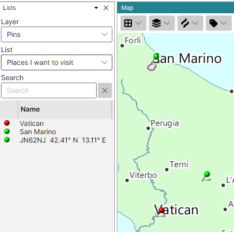

Pins
Pins mark places of your choice on both maps: a friend's location, a place you plan to visit, a station you worked. They are kept in lists on the Pins layer of the Lists Panel, and the maps show the pins of the list selected there.

Creating a Pin List
Pins can be added only once a pin list exists:
- in the Lists panel, pick Pins in the Layer box;
- in the List box, pick New List... and type a name for the list.
You can keep several pin lists - one per trip, say - and switch between them in the List box. The maps show the pins of the list selected on the Pins layer, even while the Lists panel shows another layer.
Adding a Pin
Right-click the map where the pin should go, open Add Pin, and pick one of the ten colours. Without a pin list the item is disabled, and its tooltip says why.
A new pin is named by its grid square and its latitude and longitude.
Editing and Removing Pins
- On the map - right-click a pin and pick Remove Pin;
- In the Lists panel - with the Pins layer selected, right-click the row of a pin:
- Edit Pin... opens a dialog in which you can give the pin a name of your own and another colour. An empty name names the pin by its grid square and position again;
- Remove Pin removes it.
Double-click a row to find its pin on the map. The pins are saved as soon as they change.
Pins are shown only while the Lists panel is open; closing the panel takes them off the maps.